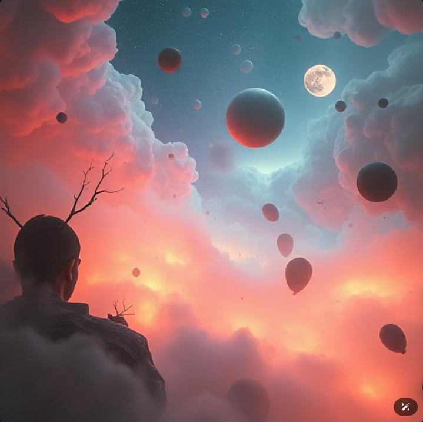

✅ 5 Common Visual Elements:
1. Floating or Suspended Objects
Many images feature objects like clocks, brains, spheres, light bulbs, or hot air balloons floating unnaturally in the sky or space. This creates a strong surreal or dreamlike atmosphere by defying gravity and realism.
2. Soft Fog or Mist
A hazy, ethereal layer of fog appears in most of the images, which creates depth and a sense of mystery. It also softens the contrast, enhancing the dreamlike quality.
3. Unrealistic Lighting / Glow
Some objects glow (like the light bulb, clocks, or balloons) in ways that are physically impossible or exaggerated. This lighting gives the impression of fantasy or magic.
1. Floating or Suspended Objects
Many images feature objects like clocks, brains, spheres, light bulbs, or hot air balloons floating unnaturally in the sky or space. This creates a strong surreal or dreamlike atmosphere by defying gravity and realism.
2. Soft Fog or Mist
A hazy, ethereal layer of fog appears in most of the images, which creates depth and a sense of mystery. It also softens the contrast, enhancing the dreamlike quality.
3. Unrealistic Lighting / Glow
Some objects glow (like the light bulb, clocks, or balloons) in ways that are physically impossible or exaggerated. This lighting gives the impression of fantasy or magic.
4. Symmetrical or Balanced Composition
Most of the compositions are centered or balanced, often with horizon lines or vanishing points. This calm structure contrasts with the surreal content, making the scenes feel peaceful yet uncanny.
5. Nature + Surreal Object Juxtaposition
Many images combine natural landscapes (mountains, forests, rivers) with unnatural or manmade elements (geometric shapes, clocks, or flying objects). This contrast highlights the artificiality of the scene and evokes philosophical or dreamlike interpretation.
ü§ñ Why AI Models Generate These Kinds of Results:
1. Trained on Surrealism and Fantasy Art - AI models are trained on massive datasets that include paintings, concept art, and fantasy landscapes from artists like Salvador Dalí or contemporary illustrators.
2. Semantic Associations - Words like dream, fantasy, fog, or surreal are semantically associated with floating objects, soft lighting, and impossible scenarios.
3. Aesthetic Prioritization - AI tends to favor visually harmonious and emotionally evocative imagery.
4. Generative Gaps = Creativity - When prompts leave room for interpretation, AI "fills the gap" by pulling from surreal structures that don't exist in the real world.
5. Echoes of Common Artistic Tropes - Many visual elements are reminiscent of common tropes in concept art which AI replicates due to their over-representation in training data.
Most of the compositions are centered or balanced, often with horizon lines or vanishing points. This calm structure contrasts with the surreal content, making the scenes feel peaceful yet uncanny.
5. Nature + Surreal Object Juxtaposition
Many images combine natural landscapes (mountains, forests, rivers) with unnatural or manmade elements (geometric shapes, clocks, or flying objects). This contrast highlights the artificiality of the scene and evokes philosophical or dreamlike interpretation.
ü§ñ Why AI Models Generate These Kinds of Results:
1. Trained on Surrealism and Fantasy Art - AI models are trained on massive datasets that include paintings, concept art, and fantasy landscapes from artists like Salvador Dalí or contemporary illustrators.
2. Semantic Associations - Words like dream, fantasy, fog, or surreal are semantically associated with floating objects, soft lighting, and impossible scenarios.
3. Aesthetic Prioritization - AI tends to favor visually harmonious and emotionally evocative imagery.
4. Generative Gaps = Creativity - When prompts leave room for interpretation, AI "fills the gap" by pulling from surreal structures that don't exist in the real world.
5. Echoes of Common Artistic Tropes - Many visual elements are reminiscent of common tropes in concept art which AI replicates due to their over-representation in training data.

By Dall-E
Colored figure
Evil alien characters
Blue and Pink
Dark moody star

By Pixar
Neon lights
Urban decay
Pink glow
Futuristic

By Deep
Dark atmosphere
Blue tones
Silhouette
Mysterious
 - Copy.png)
By Stable Diffusion
Long corridor
Purple hues
Symmetrical
Perspective

By Firefly
Red dominant
High contrast
Moody lighting
Cinematic
By Artbreeder
Blue ambiance
Reflective surfaces
Clean lines
Modern tech